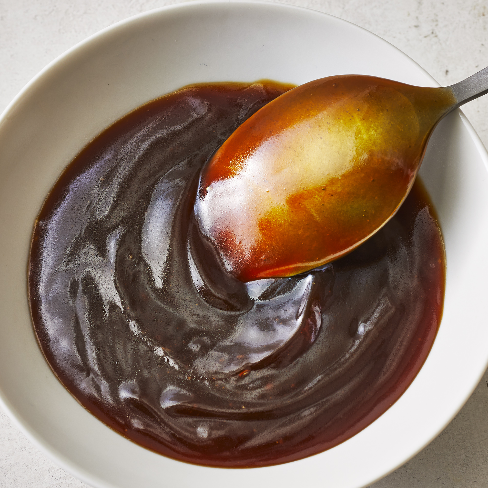

Tariyaki Sauce

Description
This simple but amazing teriyaki sauce is great for chicken, fish, or meat dishes. I will add a Japanese flavor to noodle stir fries or rice dishes, and can also be used as a dip for dumplings or shrimp.
Ingredients
- 1 cup water
- ¼ cup soy sauce
- 5 teaspoons packed brown sugar
- 1 tablespoon honey, or more to taste
- ½ teaspoon ground ginger
- ¼ teaspoon garlic powder
- 2 tablespoons cornstarch
- ¼ cup cold water
Steps
- Combine 1 cup water, soy sauce, brown sugar, honey, ginger, and garlic powder in a saucepan over medium heat. Cook until nearly heated through, about 1 minute.
- Mix cornstarch and 1/4 cold water together in a cup; stir until dissolved. Add to the saucepan. Cook and stir sauce until thickened, 5 to 7 minutes.